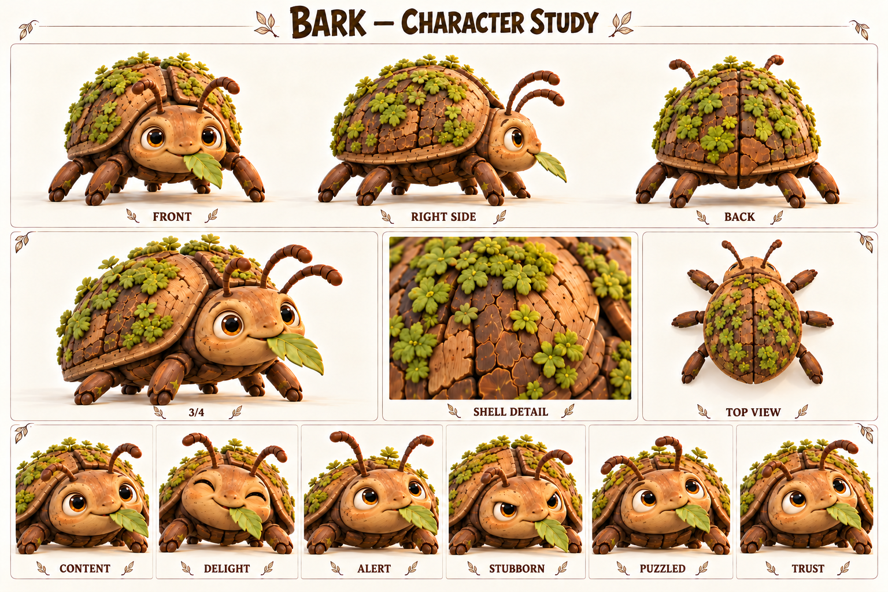

Чего хочет
Найти пищу, тень и спокойную безопасную опору.
Живёт в собственном медленном ритме и может договориться с теми, кто этот ритм заметит.
Жук-коряжник, самостоятельный обитатель тропы; естественное препятствие, не злодей.

Кора на панцире; мох; янтарные глаза; шесть лап; лист во рту.
Палитра: Кора / мох / янтарь.
Жук-коряжник выбирает влажную тень, мягкие листья и удобные места для отдыха. Его древесный панцирь с мхом похож на часть леса, поэтому спешащий путник иногда замечает его только тогда, когда «коряга» начинает двигаться. Он не охраняет дорогу и не строит ловушек: просто хорошие места для обеда часто совпадают с удобными местами для шага.
В рабочей истории после сильного дождя часть привычных листьев оказалась залита, и Жук перебрался ближе к деревенской тропе. Первые попытки прогнать его громкими командами не помогли. Фика заметила, что он поворачивается к свежему листу раньше, чем к шуму, а Шал показал, как оставить ему проход. Для жука это было не приручение, а понятное изменение пространства.
Будущие сцены могут строиться на взаимном приспособлении: жители перестают складывать вещи на его дорожке, а он привыкает обходить занятый настил. Он не становится послушным питомцем и не обязан помогать в ответ на кормление. Его небольшая драматическая дуга — от настороженного замирания к спокойному присутствию рядом. Игрок узнаёт, что не всякое препятствие имеет злой умысел.
Найти пищу, тень и спокойную безопасную опору.
В поведенческом смысле — привыкнуть к предсказуемому соседству, сохраняя собственные границы.
Резкий шум, нависающее движение и отсутствие пути отступления.
Упрямо остаётся на удобном месте; это особенность поведения, не моральная вина.
Чувствительность к поверхности, устойчивость, терпение и запоминание знакомых маршрутов.
Выглядит неподвижной корягой, но постоянно исследует пространство усиками.
Темп и ритм. Невербальный персонаж: короткие щелчки, шорох лап и длинные спокойные паузы.
Слова и построение фразы. Слова не произносит. Значение передаётся усиками, остановкой, поворотом и дистанцией.
Юмор. Пауза перед неторопливым укусом листа в момент всеобщей спешки.
Под давлением. Замирает, опускает усики, прижимает лапы; затем ищет выход.
Как проявляет заботу. Узнаёт привычное спокойное присутствие, не изображает человеческую благодарственную речь.
Чего избегать. Не добавлять озвученные человеческие реплики, злобный оскал и автоматическое послушание за еду.
| Ситуация | Реплика или действие |
|---|---|
| Приветствие · действие | Поворачивает усики к знакомому шагу и продолжает жевать. |
| Тревога · действие | Замирает; лист остаётся в жвалах, усики уходят назад. |
| Просьба о месте · действие | Касается края предмета усиком и останавливается. |
| Отказ · действие | Плотнее ставит лапы и отворачивает голову. |
| Доверие · действие | Сам выходит из укрытия, когда ему оставили проход. |
| Юмор · подпись карточки | «Я тут ненадолго» — авторская подпись, не произнесённая реплика. |
| Подпись на листе | Состояние | Актёрская задача |
|---|---|---|
| CONTENT | Довольство | Полуприкрытые глаза, спокойные усики. |
| DELIGHT | Удовольствие | Взгляд оживляется при свежем листе. |
| ALERT | Тревога | Усики назад, тело ниже. |
| STUBBORN | Упрямство | Лапы устойчиво расставлены, жевание продолжается. |
| PUZZLED | Недоумение | Поочерёдно поворачивает усики к препятствию. |
| TRUST | Доверие | Тело свободнее, усики исследуют без резкого отдёргивания. |
Движение: Шесть лап работают согласованно, панцирь имеет вес; эмоции через глаза, усики и высоту корпуса. Не прыгает как гоблин.
| План | Что показывает |
|---|---|
| Общий план спереди | Силуэт, лицо, одежда, положение ступней; без потери главных признаков. |
| Боковой ракурс | Глубина фигуры, профиль лица, предметы на ремнях и посадка одежды. |
| Вид со спины | Причёска, крепления, рюкзак либо панцирь; признаки не зеркалятся. |
| Средний план в три четверти | Лицо вместе с характерным жестом и позой корпуса. |
| Крупные детали | Материал и узнаваемые предметы; особенности лица, уха, руки или панциря. |
| Шесть эмоциональных портретов | Взгляд, брови, рот и положение головы; у существ также усики, крылья и поза. |
Небольшая история об общей тропе, где решение находится наблюдением и перестановкой вещей.